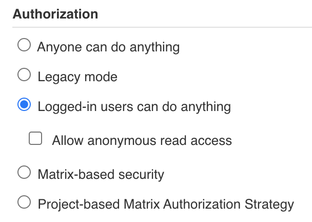
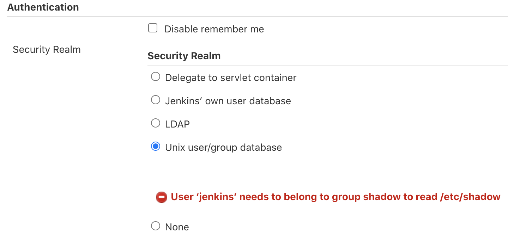
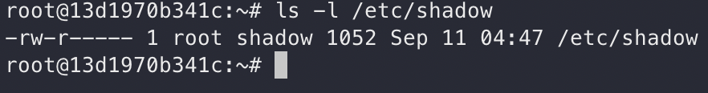
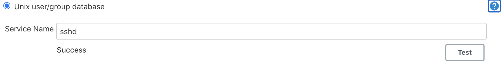
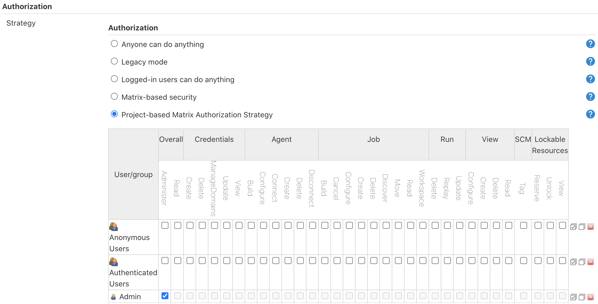
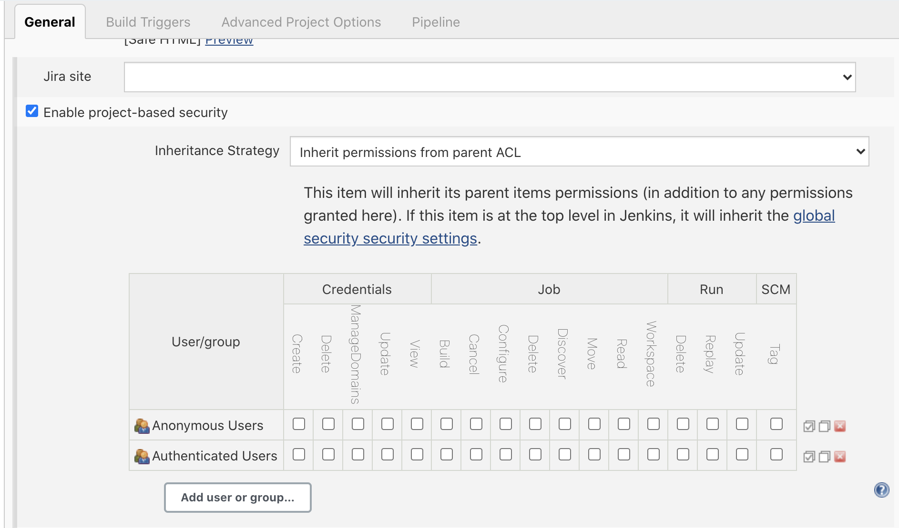
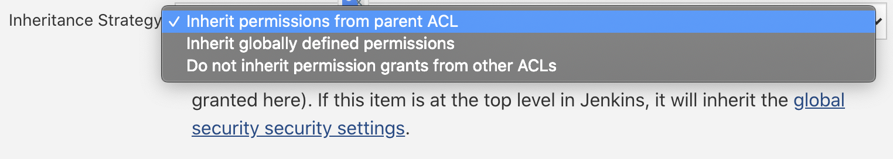

<!DOCTYPE html>
<html lang="zh-hant">

<head>

  <meta charset="utf-8">
  <meta name="viewport" content="width=device-width, initial-scale=1">
  <meta http-equiv="X-UA-Compatible" content="IE=edge">
  <meta name="generator" content="Source Themes Academic 4.8.0">

  

  
  
  
  
  
    
    
    
  
  

  <meta name="author" content="Zane Chen">

  
  
  
    
  
  <meta name="description" content="利用群組特性設定每個群組的可視性">

  
  <link rel="alternate" hreflang="zh-hant" href="https://u2633.github.io/post/2020/09/group-permission-on-jenkins/">

  


  
  
  
  <meta name="theme-color" content="rgb(0, 136, 204)">
  

  
  
  
  <script src="/js/mathjax-config.js"></script>
  

  
  
  
  
    
    <link rel="stylesheet" href="https://cdnjs.cloudflare.com/ajax/libs/academicons/1.8.6/css/academicons.min.css" integrity="sha256-uFVgMKfistnJAfoCUQigIl+JfUaP47GrRKjf6CTPVmw=" crossorigin="anonymous">
    <link rel="stylesheet" href="https://cdnjs.cloudflare.com/ajax/libs/font-awesome/5.12.0-1/css/all.min.css" integrity="sha256-4w9DunooKSr3MFXHXWyFER38WmPdm361bQS/2KUWZbU=" crossorigin="anonymous">
    <link rel="stylesheet" href="https://cdnjs.cloudflare.com/ajax/libs/fancybox/3.5.7/jquery.fancybox.min.css" integrity="sha256-Vzbj7sDDS/woiFS3uNKo8eIuni59rjyNGtXfstRzStA=" crossorigin="anonymous">

    
    
    
      
    
    
      
      
        
          <link rel="stylesheet" href="https://cdnjs.cloudflare.com/ajax/libs/highlight.js/9.18.1/styles/github.min.css" crossorigin="anonymous" title="hl-light" disabled>
          <link rel="stylesheet" href="https://cdnjs.cloudflare.com/ajax/libs/highlight.js/9.18.1/styles/dracula.min.css" crossorigin="anonymous" title="hl-dark">
        
      
    

    
    <link rel="stylesheet" href="https://cdnjs.cloudflare.com/ajax/libs/leaflet/1.5.1/leaflet.css" integrity="sha256-SHMGCYmST46SoyGgo4YR/9AlK1vf3ff84Aq9yK4hdqM=" crossorigin="anonymous">
    

    

    
    
      

      
      

      
    
      

      
      

      
    
      

      
      

      
    
      

      
      

      
    
      

      
      

      
    
      

      
      

      
    
      

      
      

      
    
      

      
      

      
    
      

      
      

      
    
      

      
      

      
    
      

      
      

      
        <script src="https://cdnjs.cloudflare.com/ajax/libs/lazysizes/5.1.2/lazysizes.min.js" integrity="sha256-Md1qLToewPeKjfAHU1zyPwOutccPAm5tahnaw7Osw0A=" crossorigin="anonymous" async></script>
      
    
      

      
      

      
    
      

      
      

      
    
      

      
      

      
        <script src="https://cdn.jsdelivr.net/npm/mathjax@3/es5/tex-chtml.js" integrity="" crossorigin="anonymous" async></script>
      
    
      

      
      

      
    

  

  
  
  
  <link rel="stylesheet" href="https://fonts.googleapis.com/css?family=B612+Mono:400,700%7COrbitron:400,700&display=swap">
  

  
  
  
  
  <link rel="stylesheet" href="/css/academic.css">

  


  


  

  <link rel="manifest" href="/index.webmanifest">
  <link rel="icon" type="image/png" href="/images/icon_hu4b75b0750a7644dfba4c3cde2b8c5154_77905_32x32_fill_lanczos_center_2.png">
  <link rel="apple-touch-icon" type="image/png" href="/images/icon_hu4b75b0750a7644dfba4c3cde2b8c5154_77905_192x192_fill_lanczos_center_2.png">

  <link rel="canonical" href="https://u2633.github.io/post/2020/09/group-permission-on-jenkins/">

  
  
  
  
  
    
    
  
  
  <meta property="twitter:card" content="summary">
  
  <meta property="og:site_name" content="Z@NE.NOTE">
  <meta property="og:url" content="https://u2633.github.io/post/2020/09/group-permission-on-jenkins/">
  <meta property="og:title" content="Group Permission on Jenkins | Z@NE.NOTE">
  <meta property="og:description" content="利用群組特性設定每個群組的可視性"><meta property="og:image" content="https://u2633.github.io/images/icon_hu4b75b0750a7644dfba4c3cde2b8c5154_77905_512x512_fill_lanczos_center_2.png">
  <meta property="twitter:image" content="https://u2633.github.io/images/icon_hu4b75b0750a7644dfba4c3cde2b8c5154_77905_512x512_fill_lanczos_center_2.png"><meta property="og:locale" content="zh-hant">
  
    
      <meta property="article:published_time" content="2020-09-11T15:14:27&#43;08:00">
    
    <meta property="article:modified_time" content="2020-09-11T15:14:27&#43;08:00">
  

  


    


  


<script type="application/ld+json">
{
  "@context": "https://schema.org",
  "@type": "BlogPosting",
  "mainEntityOfPage": {
    "@type": "WebPage",
    "@id": "https://u2633.github.io/post/2020/09/group-permission-on-jenkins/"
  },
  "headline": "Group Permission on Jenkins",
  
  "datePublished": "2020-09-11T15:14:27+08:00",
  "dateModified": "2020-09-11T15:14:27+08:00",
  
  "author": {
    "@type": "Person",
    "name": "Zane"
  },
  
  "publisher": {
    "@type": "Organization",
    "name": "Z@NE.NOTE",
    "logo": {
      "@type": "ImageObject",
      "url": "https://u2633.github.io/images/icon_hu4b75b0750a7644dfba4c3cde2b8c5154_77905_192x192_fill_lanczos_center_2.png"
    }
  },
  "description": "利用群組特性設定每個群組的可視性"
}
</script>

  

  


  


  


  <title>Group Permission on Jenkins | Z@NE.NOTE</title>

</head>

<body id="top" data-spy="scroll" data-offset="70" data-target="#TableOfContents" class="dark">

  <aside class="search-results" id="search">
  <div class="container">
    <section class="search-header">

      <div class="row no-gutters justify-content-between mb-3">
        <div class="col-6">
          <h1>搜尋</h1>
        </div>
        <div class="col-6 col-search-close">
          <a class="js-search" href="#"><i class="fas fa-times-circle text-muted" aria-hidden="true"></i></a>
        </div>
      </div>

      <div id="search-box">
        
        <input name="q" id="search-query" placeholder="搜尋..." autocapitalize="off"
        autocomplete="off" autocorrect="off" spellcheck="false" type="search">
        
      </div>

    </section>
    <section class="section-search-results">

      <div id="search-hits">
        
      </div>

    </section>
  </div>
</aside>


  


<nav class="navbar navbar-expand-lg navbar-light compensate-for-scrollbar" id="navbar-main">
  <div class="container">

    
    <div class="d-none d-lg-inline-flex">
      <a class="navbar-brand" href="/">Z@NE.NOTE</a>
    </div>
    

    
    <button type="button" class="navbar-toggler" data-toggle="collapse"
            data-target="#navbar-content" aria-controls="navbar" aria-expanded="false" aria-label="切換導航">
    <span><i class="fas fa-bars"></i></span>
    </button>
    

    
    <div class="navbar-brand-mobile-wrapper d-inline-flex d-lg-none">
      <a class="navbar-brand" href="/">Z@NE.NOTE</a>
    </div>
    

    
    
    <div class="navbar-collapse main-menu-item collapse justify-content-start" id="navbar-content">

      
      <ul class="navbar-nav d-md-inline-flex">
        

        

        
        
        
          
        

        
        
        
        
        
        
          
          
          
            
          
          
        

        <li class="nav-item">
          <a class="nav-link " href="/#about"><span>關於</span></a>
        </li>

        
        

        

        
        
        
          
        

        
        
        
        
        
        
          
          
          
            
          
          
        

        <li class="nav-item">
          <a class="nav-link " href="/#posts"><span>文章</span></a>
        </li>

        
        

        

        
        
        
          
        

        
        
        
        
        
        
          
          
          
            
          
          
        

        <li class="nav-item">
          <a class="nav-link " href="/#projects"><span>專案</span></a>
        </li>

        
        

        

        
        
        
          
        

        
        
        
        
        
        
          
          
          
            
          
          
        

        <li class="nav-item">
          <a class="nav-link " href="/#contact"><span>聯絡我</span></a>
        </li>

        
        

      

        
      </ul>
    </div>

    <ul class="nav-icons navbar-nav flex-row ml-auto d-flex pl-md-2">
      
      <li class="nav-item">
        <a class="nav-link js-search" href="#"><i class="fas fa-search" aria-hidden="true"></i></a>
      </li>
      

      
      <li class="nav-item">
        <a class="nav-link js-dark-toggle" href="#"><i class="fas fa-moon" aria-hidden="true"></i></a>
      </li>
      

      

    </ul>

  </div>
</nav>


  <article class="article">

  


  

  
  
  
<div class="article-container pt-3">
  <h1>Group Permission on Jenkins</h1>

  

  
    


<div class="article-metadata">

  
  
  
  
  <div>
    

  
  <span><a href="/authors/zane/">Zane</a></span>
  </div>
  
  

  
  <span class="article-date">
    
    
      
    
    2020年9月11日
  </span>
  

  

  
  <span class="middot-divider"></span>
  <span class="article-reading-time">
    1 閱讀時間（分鐘）
  </span>
  

  
  
  

  
  
  <span class="middot-divider"></span>
  <span class="article-categories">
    <i class="fas fa-folder mr-1"></i><a href="/categories/devops/">DevOps</a></span>
  

</div>

    


  
</div>


  <div class="article-container">

    <div class="article-style">
      <h2 id="前言">前言</h2>
<p>相信大家在使用 Jenkins 的時候，大部份的人架設完後並且建立完使用者後，都是直接開始建構自己的 Jobs，
而 Jenkins 的<code>Authorization</code>預設值如下圖</p>
<p></p>
<p>從字面可以理解，這代表任何一個使用者都可以進去亂搞。所以，不論你是新人還是<del>老屁股</del>資深人員，
只要對 Jenkins 有一定的熟悉程度都可以隨意去接觸到這系統更進一步的設定。這樣等同形成了資安的缺口了。</p>
<p>為了避免這種問題，我們最好的方式就是利用群組的設定來賦予使用者能行使的權力。</p>
<p>Jenkins 本身雖然沒有群組的概念，但是可以透過<code>Unix user/group database</code>的方式來達成。</p>
<p><code>Unix user/group database</code>是指利用 Unix-Like 系統本身就有的<strong>使用者/群組</strong>的功能，透過運行 Jenkins 的作業系統中，裡面的使用者及群組來做人員管理。讓我看一下如何將這方式達到人員及專案上的管理吧。</p>
<h2 id="設定-jenkins-security-realm">設定 Jenkins Security Realm</h2>
<p>首先，我們先進入<code>Configure Global Security</code>把<code>Security Realm</code>的設定由<code>Jenkins’ own user database</code>變更為<code>Unix user/group database</code>並且執行<code>測試</code>。如果這是一個相當乾淨的系統，使用者馬上就會遇到第一個問題 - <strong>權限</strong>。</p>
<p></p>
<p>這意思是 Jenkins 並不屬於<code>shadow</code>這個群組，所以沒有存取的權限。</p>
<p>參考
<a href="https://www.jenkins.io/security/advisory/2019-05-21/" target="_blank" rel="noopener">官方文件</a>及這篇
<a href="https://github.com/garbagetown/ansible-jenkins/issues/6#issue-33045278" target="_blank" rel="noopener">文章</a>可以得知，Jenkins 必需擁有<code>/etc/shadow</code>的讀取權限。</p>
<p>進入 Jenkins 查看一下這個檔案目前的設定吧。因為筆者是使用 Docker，所以我們先以<code>root</code>的權限登入 Jenkins。
執行<code>docker exec -it --workdir /root --user root 13d /bin/bash</code>登入並查詢<code>/etc/shadow</code>的權限設定。</p>
<p></p>
<p>可以看到目前權限是<code>640</code>，只有群組跟擁有者有讀取的權限。這邊我們就直接將<code>jenkins</code>這個使用者加入<code>shadow</code>的群組吧!
輸入<code>gpasswd -a jenkins shadow</code>便完成設定了。登出後再重啟我們的 Container 即可。</p>
<p>進入 Jenkins 的設定頁後，再測試一次我們的設定是否成功。正常情況下，應該看到下圖</p>
<p></p>
<h2 id="設定-host-users-and-group">設定 Host Users and Group</h2>
<p>啟用<code>Unix user/group data</code>之後，接下來就是建立我們的使用者及群組。</p>
<p>執行<code>docker exec -it --workdir /root --user root 13d /bin/bash</code>進入我們的作業系統，
要建立群組，執行<code>groupadd $GROUP_NAME</code>，要建立使用者執行<code>useradd $USER_NAME</code>或是要建立使用者並加入群組執行<code>useradd $USER_NAME -G $GROUP_NAME</code></p>
<h2 id="設定-jenkins-authorization">設定 Jenkins Authorization</h2>
<p>完成使用者及群組的建立後，我們再進入<code>Configure Global Security</code>的<code>Authorization</code>，並且選擇<code>Project-based Matrix Authorization Strategy</code>，如下圖。</p>
<p></p>
<p>點擊下方的<code>Add user or group...</code>，並且加入剛剛在作業系統中的加入的群組或是使用者，便可以設定其權限。</p>
<p>在這裡的權限是全域的，可以讓我們在 Job Permission 中直接被使用。</p>
<p>如果使用者想要獨立設定 Job Permission ，亦可參考下一章節的說明。</p>
<h2 id="設定-jenkins-job-permission">設定 Jenkins Job Permission</h2>
<p>進入 Job 的設定頁面後，點擊<code>Enable project-based security</code>啟用專案安全性設定。</p>
<p></p>
<p><code>Inheritance Strategy</code>有三個選項可供選擇。</p>
<p></p>
<p>第一個選項代表要繼承 Parent Job 的 ACL。如果此 Job 沒有 Parent 就會使用 Global 的設定，也就是第二個選項，第三個選項則是代表不使用任何即有的 ACL 設定。</p>
<p>在選定策略後，亦可以點擊<code>Add user or group...</code>如入新的使用者或群且，亦可加入即有的使用者或群組進行 Job 的獨立設定。</p>
<h2 id="總結">總結</h2>
<p>以<code>Unix user/group data</code>的方式設定權限管，對於 Unix-Like 系統比較不熟悉的朋友們，在權限的管理會需要花點時間來了解與學習。但是以群組的方式管理確實也會比較有效率。假設，如果你有 100 個使用者呢?我想光設定就能搞死管理者了吧。</p>
<h2 id="參考資料">參考資料</h2>
<p><a href="https://www.edureka.co/community/47822/there-restrict-permissions-user-per-individual-job-jenkins">https://www.edureka.co/community/47822/there-restrict-permissions-user-per-individual-job-jenkins</a>
<a href="https://www.jenkins.io/security/advisory/2019-05-21/">https://www.jenkins.io/security/advisory/2019-05-21/</a>
<a href="https://github.com/oracle/docker-images/issues/1336#issuecomment-530789709">https://github.com/oracle/docker-images/issues/1336#issuecomment-530789709</a>
<a href="https://github.com/garbagetown/ansible-jenkins/issues/6#issue-33045278">https://github.com/garbagetown/ansible-jenkins/issues/6#issue-33045278</a></p>

    </div>

    


<div class="article-tags">
  
  <a class="badge badge-light" href="/tags/jenkins/">Jenkins</a>
  
</div>


<div class="share-box" aria-hidden="true">
  <ul class="share">
    
      
      
      
        
      
      
      
      <li>
        <a href="https://twitter.com/intent/tweet?url=https://u2633.github.io/post/2020/09/group-permission-on-jenkins/&amp;text=Group%20Permission%20on%20Jenkins" target="_blank" rel="noopener" class="share-btn-twitter">
          <i class="fab fa-twitter"></i>
        </a>
      </li>
    
      
      
      
        
      
      
      
      <li>
        <a href="https://www.facebook.com/sharer.php?u=https://u2633.github.io/post/2020/09/group-permission-on-jenkins/&amp;t=Group%20Permission%20on%20Jenkins" target="_blank" rel="noopener" class="share-btn-facebook">
          <i class="fab fa-facebook"></i>
        </a>
      </li>
    
      
      
      
        
      
      
      
      <li>
        <a href="mailto:?subject=Group%20Permission%20on%20Jenkins&amp;body=https://u2633.github.io/post/2020/09/group-permission-on-jenkins/" target="_blank" rel="noopener" class="share-btn-email">
          <i class="fas fa-envelope"></i>
        </a>
      </li>
    
      
      
      
        
      
      
      
      <li>
        <a href="https://www.linkedin.com/shareArticle?url=https://u2633.github.io/post/2020/09/group-permission-on-jenkins/&amp;title=Group%20Permission%20on%20Jenkins" target="_blank" rel="noopener" class="share-btn-linkedin">
          <i class="fab fa-linkedin-in"></i>
        </a>
      </li>
    
  </ul>
</div>


  
    
    


  
  
  
  
  
  <div class="media author-card content-widget-hr">
    

    <div class="media-body">
      <h5 class="card-title"><a href="/authors/zane/"></a></h5>
      
      
      <ul class="network-icon" aria-hidden="true">
  
</ul>

    </div>
  </div>


  


  
  
  <div class="article-widget content-widget-hr">
    <h3>相關</h3>
    <ul>
      
      <li><a href="/post/2020/09/the-right-way-to-run-npm-command-in-container-on-jenkins/">The Right Way to Run Npm Commands in Container on Jenkins</a></li>
      
      <li><a href="/post/2020/09/how-to-run-jenkins-service-on-docker/">How to Run Jenkins Service on Docker</a></li>
      
    </ul>
  </div>
  


  </div>
</article>

      

    
    
    
      <script src="https://cdnjs.cloudflare.com/ajax/libs/jquery/3.4.1/jquery.min.js" integrity="sha256-CSXorXvZcTkaix6Yvo6HppcZGetbYMGWSFlBw8HfCJo=" crossorigin="anonymous"></script>
      <script src="https://cdnjs.cloudflare.com/ajax/libs/jquery.imagesloaded/4.1.4/imagesloaded.pkgd.min.js" integrity="sha256-lqvxZrPLtfffUl2G/e7szqSvPBILGbwmsGE1MKlOi0Q=" crossorigin="anonymous"></script>
      <script src="https://cdnjs.cloudflare.com/ajax/libs/jquery.isotope/3.0.6/isotope.pkgd.min.js" integrity="sha256-CBrpuqrMhXwcLLUd5tvQ4euBHCdh7wGlDfNz8vbu/iI=" crossorigin="anonymous"></script>
      <script src="https://cdnjs.cloudflare.com/ajax/libs/fancybox/3.5.7/jquery.fancybox.min.js" integrity="sha256-yt2kYMy0w8AbtF89WXb2P1rfjcP/HTHLT7097U8Y5b8=" crossorigin="anonymous"></script>

      
        <script src="https://cdnjs.cloudflare.com/ajax/libs/mermaid/8.4.8/mermaid.min.js" integrity="sha256-lyWCDMnMeZiXRi7Zl54sZGKYmgQs4izcT7+tKc+KUBk=" crossorigin="anonymous" title="mermaid"></script>
      

      
        
        <script src="https://cdnjs.cloudflare.com/ajax/libs/highlight.js/9.18.1/highlight.min.js" integrity="sha256-eOgo0OtLL4cdq7RdwRUiGKLX9XsIJ7nGhWEKbohmVAQ=" crossorigin="anonymous"></script>
        
        <script src="https://cdnjs.cloudflare.com/ajax/libs/highlight.js/9.18.1/languages/r.min.js"></script>
        
      

    

    
    
      <script src="https://cdnjs.cloudflare.com/ajax/libs/leaflet/1.5.1/leaflet.js" integrity="sha256-EErZamuLefUnbMBQbsEqu1USa+btR2oIlCpBJbyD4/g=" crossorigin="anonymous"></script>
    

    
    
    <script>const code_highlighting = true;</script>
    

    
    
    <script>const isSiteThemeDark = true;</script>
    

    
    
    
    
    
    
    <script>
      const search_config = {"indexURI":"/index.json","minLength":1,"threshold":0.3};
      const i18n = {"no_results":"找不到结果","placeholder":"搜尋...","results":"搜尋结果"};
      const content_type = {
        'post': "文章",
        'project': "專案",
        'publication' : "出版物",
        'talk' : "演講"
        };
    </script>
    

    
    

    
    
    <script id="search-hit-fuse-template" type="text/x-template">
      <div class="search-hit" id="summary-{{key}}">
      <div class="search-hit-content">
        <div class="search-hit-name">
          <a href="{{relpermalink}}">{{title}}</a>
          <div class="article-metadata search-hit-type">{{type}}</div>
          <p class="search-hit-description">{{snippet}}</p>
        </div>
      </div>
      </div>
    </script>
    

    
    
    <script src="https://cdnjs.cloudflare.com/ajax/libs/fuse.js/3.2.1/fuse.min.js" integrity="sha256-VzgmKYmhsGNNN4Ph1kMW+BjoYJM2jV5i4IlFoeZA9XI=" crossorigin="anonymous"></script>
    <script src="https://cdnjs.cloudflare.com/ajax/libs/mark.js/8.11.1/jquery.mark.min.js" integrity="sha256-4HLtjeVgH0eIB3aZ9mLYF6E8oU5chNdjU6p6rrXpl9U=" crossorigin="anonymous"></script>
    

    
    

    
    

    
    
    
    
    
    
    
    
    
      
    
    
    
    
    <script src="/js/academic.min.6f1005d1a84220e2f466ff3d8e712f31.js"></script>

    


  
  
  <div class="container">
    <footer class="site-footer">
  

  <p class="powered-by">
    

    Powered by the
    <a href="https://sourcethemes.com/academic/" target="_blank" rel="noopener">Academic theme</a> for
    <a href="https://gohugo.io" target="_blank" rel="noopener">Hugo</a>.

    
    <span class="float-right" aria-hidden="true">
      <a href="#" class="back-to-top">
        <span class="button_icon">
          <i class="fas fa-chevron-up fa-2x"></i>
        </span>
      </a>
    </span>
    
  </p>
</footer>

  </div>
  

  
<div id="modal" class="modal fade" role="dialog">
  <div class="modal-dialog">
    <div class="modal-content">
      <div class="modal-header">
        <h5 class="modal-title">引用</h5>
        <button type="button" class="close" data-dismiss="modal" aria-label="Close">
          <span aria-hidden="true">&times;</span>
        </button>
      </div>
      <div class="modal-body">
        <pre><code class="tex hljs"></code></pre>
      </div>
      <div class="modal-footer">
        <a class="btn btn-outline-primary my-1 js-copy-cite" href="#" target="_blank">
          <i class="fas fa-copy"></i> 複製
        </a>
        <a class="btn btn-outline-primary my-1 js-download-cite" href="#" target="_blank">
          <i class="fas fa-download"></i> 下載
        </a>
        <div id="modal-error"></div>
      </div>
    </div>
  </div>
</div>

</body>
</html>
